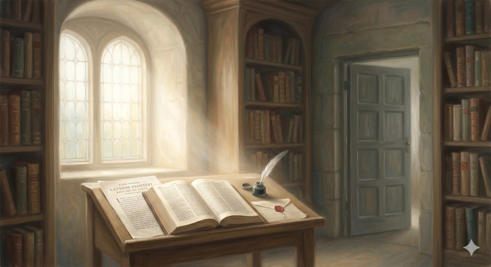

The Reformation
The Reformation shelf — the recovery of justification by faith in Luther, Calvin, and Tyndale; the Reformers' honestly-named failures; Westminster; and the Puritans, including Bunyan himself.
"...the righteous shall live by faith." Romans 1:17 (ESV)
The third shelf holds the records of the fire — the Reformation, when the gospel of grace was recovered with such force that the whole church was remade, and the tradition this site stands in was born. It is the shelf nearest to home, the one whose recoveries shaped every page of this curriculum. And it keeps, alongside the glory, an honest account of the men who carried it — because the same hands that recovered grace alone did not always extend it to those they feared.
1517–1600The recovery of the gospel
On the 31st of October, 1517, a German Augustinian monk nailed a list of debate propositions to a castle church door in a small university town. He was not trying to start a revolution; he was trying to have an argument with his colleagues. He got the Reformation instead.
Martin Luther had been tormented by one question: how can I be righteous before a holy God? The church's official answer — confession, penance, accumulated merit, purchased indulgences — had failed to still the accusation roaring in his conscience. Then he read Romans, slowly, again and again, and found something that reordered everything: the righteousness of God is not mainly what God demands from us to crush us, but what God gives us in Christ, freely, received by faith alone. The just shall live by faith. He described it as feeling the gates of paradise thrown open. Summoned before the Emperor at Worms in 1521 and told to recant, his answer became one of the most famous sentences in Western history: here I stand; I can do no other. Declared an outlaw, hidden in a castle by a friend, he spent ten months translating the New Testament into a German so vivid it helped shape the language itself.
John Calvin came slightly later and brought a systematic mind Luther lacked. His Institutes of the Christian Religion — begun at twenty-six and revised all his life — remain the most comprehensive account of Reformed theology ever written, and Geneva under his teaching became a school for the Reformed faith that sent pastors across France, the Low Countries, Scotland, and England. And William Tyndale, the quiet Englishman whose ambition was simply to give the ploughboy the Bible in his own tongue, produced the first printed English New Testament while the crown hunted him. Caught and strangled at the stake in 1536, his dying prayer was that God would open the King of England's eyes — and within three years an English Bible built largely on his work stood in every English parish. Much of what the King James Bible sounds like, it sounds like because of Tyndale.
In plain terms
The Reformation's central recovery was justification by faith alone: you are made right with God not by earning it but by receiving Christ as a gift. That single discovery — and the drive to put the Bible in ordinary people's hands — remade the Western church and gave rise to the Protestant and Reformed tradition.
A hard record on the shelfThe Reformers' failures
The Reformation recovered the gospel. It did not produce perfect men, and an honest archive names the failures rather than burying them. Luther and the Jews: the early Luther wrote with compassion toward Jewish people, hoping the recovered gospel would win them; when they were not persuaded, something curdled, and his 1543 treatise On the Jews and Their Lies became one of the most virulent antisemitic documents in Christian history — later printed as propaganda in Nazi Germany. His recovery of justification is the greatest theological recovery since the apostolic age; that treatise is, without qualification, a moral catastrophe. Both are true of the same man.
Calvin and Servetus: when the anti-Trinitarian Michael Servetus, a fugitive, arrived in Geneva in 1553, Calvin had him arrested, and Servetus was burned at the stake — Calvin had asked for the more merciful sword and been refused. He defended the execution to the end of his life. A former friend, Sebastian Castellio, answered with what became a founding text of religious toleration: to kill a man is not to defend a doctrine; it is to kill a man. Calvin was wrong; Castellio was right. And the persecution of the Anabaptists — radicals who insisted on believer's baptism, the separation of church and state, and pacifism — is nearly unbearable in its irony: men who had themselves been hunted for their faith drowned others for theirs, mockingly calling it "the third baptism." None of this negates what was recovered. But the men who recovered grace alone could not seem to apply it to those they feared — a gap between what we know and what we do that is not their peculiar failure but the human condition, and ours.
The men who recovered grace alone could not always apply it to those they feared. That gap is not their peculiar failure. It is ours.
1558–1700Scotland, Westminster, and the Puritans
Scotland had its own Reformation, fiercer than England's, under John Knox — once a French galley slave for his faith, trained under Calvin — who came home determined to build a genuinely Reformed church and is said to have made Mary Queen of Scots weep with his preaching, without a sign of regret. The Presbyterian Church of Scotland he shaped became a training ground for a remarkable generation of theologians.
From that world came the Westminster Assembly, which gathered in the 1640s to produce a theological standard and gave the English-speaking Reformed tradition its defining documents: the Westminster Confession and the Larger and Shorter Catechisms — the very standard this site holds. The Shorter Catechism's opening question, What is the chief end of man?, with its answer, to glorify God, and to enjoy him forever, is perhaps the most beautiful sentence the English theological tradition has ever produced.
And then the Puritans — who have suffered badly at the hands of their reputation. The word today conjures joyless killjoys in black hats; the actual Puritans, as anyone who reads them discovers with surprise, were passionate, warm, often funny, ferociously interested in theology, and convinced that the whole of ordinary life could be lived as worship. John Owen is their theological giant — author of an unsurpassed body of work on the Spirit, the atonement, and the mortification of sin, writing sentences like cathedrals. And his near-contemporary John Bunyan wrote The Pilgrim's Progress in a Bedford prison after refusing to stop preaching without a license — the book whose road this entire site walks, and which became the bestselling work in English after the Bible.
A heavy record againThe Puritans' blind spots
The Puritans wrote beautifully about grace and practiced it unevenly toward dissenters. Roger Williams arrived in Massachusetts a committed Puritan minister and was banished in the winter of 1636 for insisting that civil government had no right to enforce religious observance and that colonists had no claim to Indigenous land without fair purchase; he walked south through the snow to found Providence, the first government in the Western world to guarantee religious liberty for all. He was right, and the men who banished him — for all their piety and brilliant theology — were wrong. Anne Hutchinson, whose chief offense was being a woman with a following and a better theologian than some of her critics, was tried and banished in 1637. And in Boston between 1659 and 1661, four Quakers, including Mary Dyer, were executed for returning after banishment — Owen's own government, in England, signing comparable warrants. The same tradition that wrote so richly of the Spirit could not yet imagine that the bruised conscience of a dissenter was sacred too.
That is the shelf nearest home — a glory and a grief held together honestly: the gospel recovered in power, by men who needed that gospel as badly as anyone they wronged. The last shelf carries the story outward, as the recovered faith breaks its European banks and becomes, for the first time, a genuinely worldwide movement.